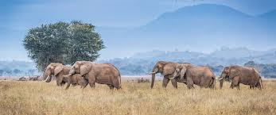
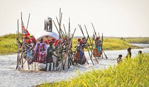
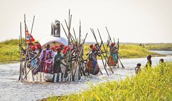
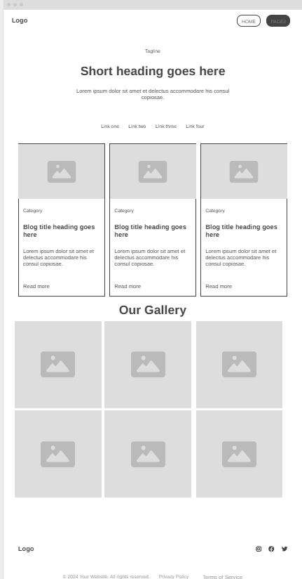

Overview
Purpose
[provide tourists and travelers with essential information about the country's natural beauty and cultural heritage while showcase attractions like the Mighty Victoria Falls and national parks and highlight local traditions and feature eco-tourism opportunities.]
Audience
[Travelers and tourists who are interested in seeking fun new adventure]
Branding
Website Logo
Style Guide
Color Palette
| Primary | Secondary | Accent 1 | Accent 2 |
|---|---|---|---|
Typography
Heading Font: [pangolin]
Paragraph Font: [source serif 4]
Normal paragraph example
Zambia offers breathtaking landscapes, rich wildlife, and thrilling adventures. Witness the majestic Victoria Falls, explore vast national parks, and enjoy world-class safaris. Whether seeking adrenaline, luxury, or cultural immersion, Zambia promises an unforgettable journey. Come and discover the wild beauty of Africa!
Colored paragraph example
Zambian adventures cater to all travelers, from relaxed family-friendly safaris to thrilling expeditions for seasoned explorers. Whether you're seeking serene nature escapes or adrenaline-pumping activities like bungee jumping and white-water rafting, Zambia offers unforgettable experiences. No matter your adventure style, Zambia's wild beauty awaits you!
Navigation
Site Map
Content
Home page
[Victoria Falls, one of the Seven Natural Wonders of the World, is Zambia's crown jewel and a must-visit destination for any traveler. Known locally as Mosi-oa-Tunya—“The Smoke That Thunders”—this breathtaking waterfall plunges over 100 meters into the Zambezi River, creating a spectacular mist and a roaring sound that can be heard from miles away. Visitors can witness the falls from multiple viewpoints, take a thrilling dip in the Devil's Pool at the edge of the cascade, or embark on an unforgettable sunset cruise along the Zambezi River. Adventure seekers can experience the ultimate adrenaline rush with bungee jumping, white-water rafting, and microlight flights over the falls]
Images for the Home page


[Page 2]
[ Lower Zambezi National Park is a haven for diverse and abundant wildlife, offering some of the best game-viewing experiences in Africa. The park is home to large herds of elephants, often seen gathering along the Zambezi River, as well as buffalo, zebras, and impalas grazing on the floodplains. Predators such as lions, leopards, and hyenas roam the park, while the elusive African wild dog occasionally makes an appearance. The Zambezi River itself is teeming with hippos and crocodiles, providing spectacular sightings, especially during boat safaris. The park is also a paradise for bird lovers, with over 400 bird species, including fish eagles, kingfishers, and the vibrant carmine bee-eaters]
Images for the Page 2
[Page 3]
[Zambia is not only a land of breathtaking landscapes and wildlife but also a country rich in vibrant traditions and cultural heritage. With over 70 ethnic groups, Zambia offers visitors a unique opportunity to witness diverse customs, traditional ceremonies, and warm hospitality that make every visit unforgettable.Beyond the ceremonies, tourists can experience authentic village life, participate in traditional dances, taste local delicacies like nshima and grilled meats, and purchase beautifully crafted handmade textiles, masks, and jewelry from local artisans. ]
Images for the Page 3
 

Wireframes
Create three wireframes for your site. One for each page and list them here
[Any additional details about home that the wireframe does not make clear]
[plan your safari]
[Any additional details about page 2 that the wireframe does not make clear]

[Explore our culture]
[Any additional details about page 3 that the wireframe does not make clear]
